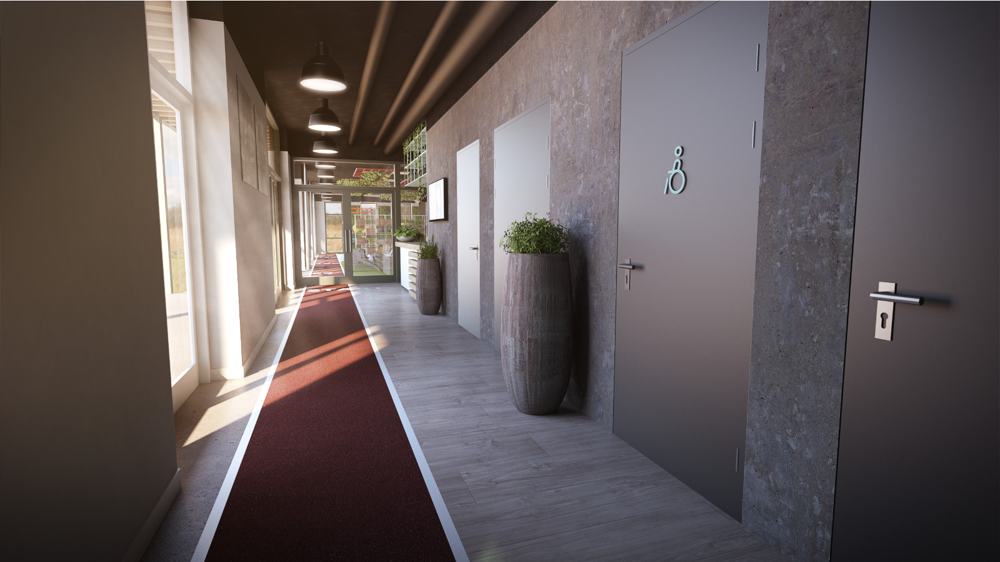

BeweegR Tilburg
Studio'OW

In opdracht van Studio'OW hebben wij de opdracht gekregen om realistische artist impressions te leveren voor de nieuwe locatie van BeweegR in het nieuwe Spoorpark in Tilburg. Dit hebben wij gedaan door middel van de aangeleverde Sketchup bestanden op te werken en te renderen met V-Ray.
